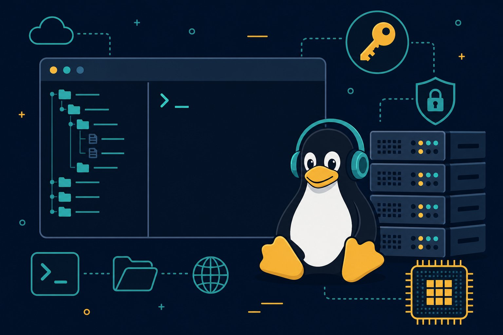

Terminal & environments survival
Every model you train, every server you touch, every GPU you rent — lives behind a black screen with a blinking cursor. Master the 20 commands that cover 90% of AI work: files, venvs, SSH, tmux, logs, and the GPU incantations.

Figure 70.1 — The terminal looks hostile and acts loyal: learn 20 commands once, use them for a decade.
1. Bash essentials (files, finding, chaining)
| Command | Does | You’ll use it to |
|---|---|---|
| pwd / ls / cd | Where / what / go | Stop being lost (add ls -lah) |
| cp / mv / rm / mkdir | Copy, move, delete, make dir | Organise runs (rm -rf = loaded gun) |
| cat / less / head / tail -f | Read files / follow logs | Watch training logs live |
| grep -r / find | Search inside / for files | “Where is this error raised?” |
| |, >, >> | Pipe, redirect, append | train.py 2>&1 | tee run.log |
| chmod +x | Make executable | Run your own scripts |
# the loop you'll type 1000x: find it, read it, watch it
grep -rn "CUDA out of memory" logs/ | head
tail -f logs/train.log # follow live (+ Ctrl-C to stop)
find . -name "*.ckpt" -size +1G # where did my disk go?2. Python environments (one project, one world)
# venv (stdlib, always available)
python -m venv .venv
source .venv/bin/activate # Windows: .venv\Scripts\activate
pip install -r requirements.txt
pip freeze > requirements.txt # snapshot what worked
# conda (heavy libs: CUDA, MKL)
conda create -n myproj python=3.11 -y
conda activate myproj3. Remote work (SSH, tmux, GPUs)
- SSH keys, not passwords:
ssh-keygenonce, copy the.pubto the server,ssh user@hostforever. Passwords get brute-forced; keys don’t. - tmux survives disconnects:
tmux new -s train→ run training → detach (Ctrl-b d) → close laptop →tmux attach -t traintomorrow. Wi-Fi drops; runs don’t. - GPU checks:
nvidia-smi(who’s using VRAM?),nvidia-smi -l 1(watch it),df -h(disk),htop(CPU/RAM). OOM? Halve batch size, then blame the model. - Move data smart:
scpfor files,rsync -avzfor folders (resumable!), never re-download 50GB twice.
Foot-guns
rm -rf $VAR/ with an empty $VAR deletes from root — quote it, or better, trash-cli. chmod 777 and pasting curl | sudo bash from strangers are how servers join botnets. pip install outside a venv + sudo pip corrupts system Python. And kill -9 on a checkpoint-writing process eats your weights — SIGTERM first.
Short notes
Bash: ls/cd, grep -r, tail -f, pipes + tee. Envs: one venv/conda per project, freeze what worked, never touch system Python. Remote: SSH keys, tmux for immortal sessions, nvidia-smi/df/htop for health, rsync for data. Foot-guns: unquoted rm -rf, 777, curl|bash, sudo pip, kill -9 mid-checkpoint.
Point notes
- grep finds, tail follows.
- One project, one env.
- Keys over passwords.
- tmux outlives Wi-Fi.
- nvidia-smi before blame.
MCQs
5 questions1. tail -f train.log does what?
2. Why one virtualenv per project?
3. Your SSH drops overnight. Training survives if you ran it inside:
4. First command when a job dies with “CUDA out of memory”:
5. rsync -avz beats scp for big folders because it:
Practice questions
P1. New GPU server day one: list your exact setup sequence (keys → env → first run).
(1) ssh-keygen locally, append .pub to server ~/.ssh/authorized_keys, disable password auth. (2) Clone repo, python -m venv .venv, activate, pip install -r requirements.txt. (3) nvidia-smi + df -h sanity; tmux new -s setup; smoke-run one batch; tail -f the log. (4) Document driver/CUDA versions in the repo README — future debugging gold.
P2. “It works on my laptop but crashes on the server.” Give the 5-step debug playbook.
(1) Diff environments: pip freeze both sides; rebuild server venv from the frozen file. (2) Compare Python/CUDA/driver versions (nvidia-smi top-right). (3) Check paths + case-sensitivity (macOS vs Linux) and missing env vars. (4) Reproduce with a minimal script + full traceback (grep the FIRST error, not the last). (5) Lock it: Dockerfile or conda-lock so “server” becomes reproducible, not folklore.
P3. A teammate proposes curl https://random.tools/install.sh | sudo bash. Respond.
Hard no as-is: unaudited root execution from a mutable URL (domain hijack = instant rootkit). Counter-proposal: download first, read the script, check checksums/signatures, prefer the distro package or a pinned release, run unprivileged in a container/VM if unsure. Convenience never outranks provenance on shared infra.